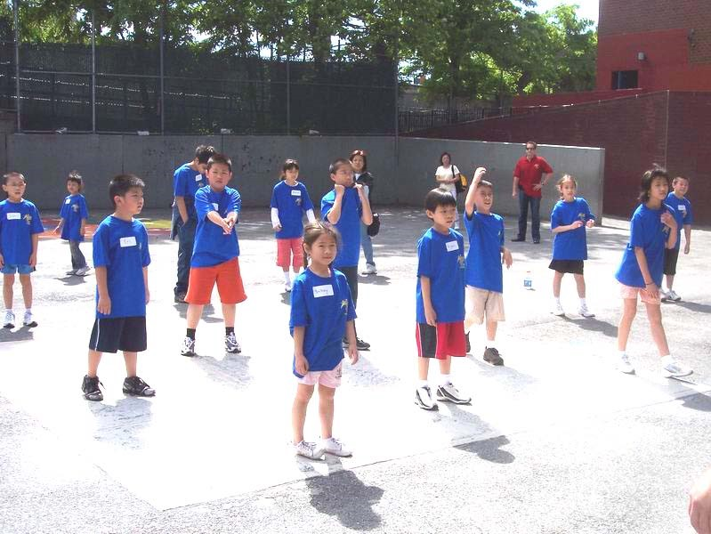

Our Mission and Vision
Friends of Columbus Park (FoCP) is a not-for-profit, all volunteer-run 501(c)3 organization based in Chinatown, NY. We represent a coalition of community-based organizations and individuals who support our mission to protect and advocate for Columbus Park.
Only communities that work together can make a difference.
Our mission is to:
- Ensure that the park is safe, clean and presentable, and that all facilities and structures are maintained and functional.
- Ensure that the park serves the general public and surrounding community regardless of race, politics, religion or beliefs.
- Promote and advocate for the establishment of a dedicated youth center in the Chinatown, NY community.
- Support special events designed to promote park usage for kids, teenagers, seniors and community.
- Maintain the park as a cultural and social resource for the surrounding community.
- Work together with park and city officials to inform and involve the community in key park issues.
FoCP founding members at a Columbus Park press conference in 2001.
Columbus Park and The Chinatown Community
For several years, the City of New York ignored the decay and deplorable conditions of Columbus Park, including the pavilion, ball field and park facilities. This spurred us to create FoCP in 2002 to advocate for the safety and cleanliness of the park, in service of our local community. Since then, we've made lots of progress and have succeeded in the initial restoration of both the ball field and the pavilion. Our vision is to see the pavilion become NY Chinatown's first small community center.
Park circa 1903 when it was known as Mulberry Bend.
Decaying conditions of the park pavilion circa 2001.
Reopening of the park pavilion circa 2007 after reconstruction.
Our Events and Programs
We sponsor and host several events and programs throughout the year to give back to our community.
Sports for Kids Basketball Program
Throughout the year, we invite kids ages 5 through 14 to join us every Saturday morning at P.S. 124 to learn how to play basketball. Enroll now for the Summer 2019 program season!
Annual Senior Day Event
In appreciation and honor of our community of senior citizens, we host a day of games and performances to entertain and engage them, and keep them healthy and active.
Jacquelynn Young Inspiration Scholarship
Each year, we award a one-time college scholarship to a graduating senior who demonstrates great heart, community spirit and an inspiration to succeed through higher education.